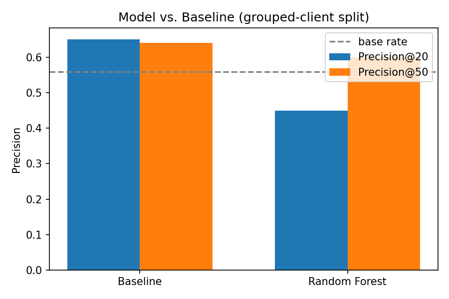

Abstract
Content teams cannot review every page, so this study asks: which pages should a reviewer check first for refresh? Using FlyRank's anonymized starter dataset — 30,000 content pages across 32 clients — we built a transparent baseline rule and compared it against a Random Forest classifier under a client-grouped validation split. The honest result: the baseline rule (Precision@50 = 0.64) modestly outperformed the model (Precision@50 = 0.60), and a naive random split had earlier made the model look misleadingly perfect (Precision@20 = 1.00) before grouping by client exposed the true number (0.45). This paper reports that result as-is, along with a ranked action queue, a leakage audit, and the validation lesson it revealed — output intended for human-reviewed, decision-support use only, never automated action.
Introduction
A content team with hundreds of thousands of pages and a small review staff cannot manually check every page for decline, staleness, or missed opportunity. They need a ranked list: which pages to look at first, and why. This is a decision-support problem, not an automation problem — a human still reviews and acts.
The obvious approach is a simple hand-written rule: flag pages that are old and still getting traffic. This paper tests whether a learned model can do meaningfully better than that rule — and reports honestly when it does not.
Data
Source: the FlyRank ML Internship starter dataset
(content_refresh_anonymized.csv) — one row per pseudonymized content
page, with trailing 90-day search and engagement metrics.
Excluded, and why
- trend_direction / trend_pct — the label's own source; used only to define the target, never as a feature.
- FlyRank product decision flags (health_score, priority_score, action_type) — not shipped in this dataset by design, and never reconstructed as a feature. Using them would mean learning an existing rule, not discovering new signal.
- content_id / client_id — pseudonymous identifiers, used only for joining and for the grouped validation split, never as model inputs.
No client names, raw URLs, or private queries appear anywhere in this paper, its source notebooks, or the linked repository.
Methodology
Task framing
This is a ranking/scoring problem — "which pages first?" — not a plain classification task. The output is an ordered queue, evaluated with Precision@K rather than accuracy alone.
Label
is_declining_label = trend_direction == "down". This is a
defined, current-window proxy, not an observed future outcome — a
limitation carried through the whole study and stated plainly below.
Baseline
A transparent rule, readable by a non-engineer: a page is flagged if it hasn't
been updated in 180+ days and it's still getting meaningful traffic
(500+ impressions in 90 days). Score = is_stale × is_visible × impressions_90d.
Model
Random Forest (200 trees, max depth 10, min samples per leaf 25, class-weight balanced), compared against Logistic Regression in earlier experimentation; Random Forest was carried forward as the stronger of the two.
Validation design
Pages from the same client can share hidden characteristics — a random split risks letting the model memorize client-specific quirks rather than learn generalizable signal. All final numbers use a grouped-by-client split (70/30, seed 42, zero client overlap between train and test).
Leakage checks
The feature set (content_age_days, days_since_last_update,
impressions_90d, avg_position, ctr,
word_count, engagement_rate, scroll_rate) was
checked against the label source columns and found clean. A separate exercise on a
constructed within-month label (built to demonstrate the leakage-hunting method)
confirmed the test harness itself catches leaks correctly: a deliberately
label-derived feature pushed ROC-AUC to a perfect 1.000; removing it dropped the
score to 0.911, and removing a further sibling column dropped it to 0.902 — the
honest number.
Results
The baseline rule outperformed the model. This is reported as the headline finding, not reframed.
| Method | Precision@20 | Precision@50 | Base rate |
|---|---|---|---|
| Baseline (stale + visible rule) | 0.65 | 0.64 | 0.559 |
| Random Forest (grouped split) | 0.45 | 0.60 | 0.559 |

Limitations
- The model does not beat the baseline here. Random Forest trails the hand-written rule at both Precision@20 and Precision@50 on this split. This narrow, single-signal rule turned out to be a genuinely strong comparison point, not an easy target to beat.
- Proxy label, not an observed outcome. The label is derived from the current window, not a validated future event. A stronger version of this study would define the label over a future window (e.g. prior 90 days of features predicting decline over the next 30 days) — explored structurally, separately, against the full ~79M-row warehouse release.
- Single split. All numbers come from one 70/30 grouped split at a fixed seed, not averaged across repeated splits.
- Cross-sectional data. Nothing here supports "refreshing a flagged page will cause traffic to recover" — only association with a proxy label. All claims in this paper are decision-support, not causal.
- Starter-slice scope. 30,000 rows and 32 clients — not yet validated at the scale of the full warehouse release.
Ranked recommendations
The output of this work is a ranked queue for human review, each page carrying a reason code — never an automated action.
-
Review flagged stale-and-visible pages first.
Reason code:
stale_visible_page— 180+ days since update, 500+ impressions in 90 days. The baseline's own strongest, most legible signal. -
Review low-CTR pages ranking on page one.
Reason code:
low_ctr_visible_page— high impressions, position 1–20, CTR below 0.5%. A snippet/title fix, not a full rewrite. -
Expand thin pages that already get traffic.
Reason code:
thin_visible_page— under 1,200 words but 250+ impressions. Depth added deliberately, not padding.
Human review is required before any action
- Confirm the traffic pattern isn't consolidation (a sibling page absorbing demand) or seasonality before treating a page as declining.
- Check whether
days_since_last_updatereflects a real gap or an unrecorded update.
What should never be automated
- Auto-publishing content changes based on the model's score alone.
- Auto-pruning or merging pages without human confirmation.
- Any claim that this system predicts Google's algorithm or guarantees recovery.
Reproducibility
work/notebooks/. Random seed
fixed at 42 throughout. Re-running capstone.ipynb from a fresh clone
reproduces every number in this paper.
→ github.com/Santosh-S321/flyrank-ml-internship